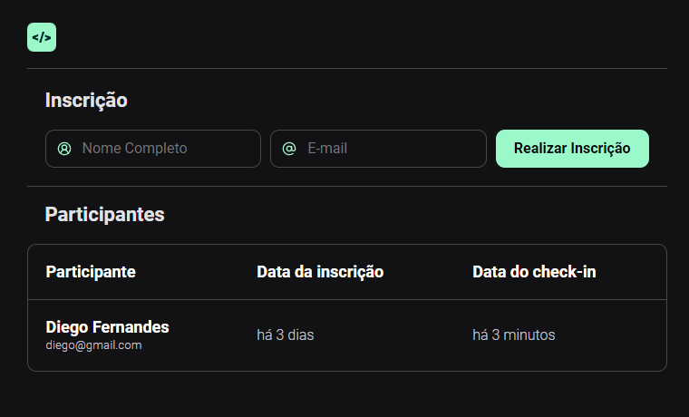
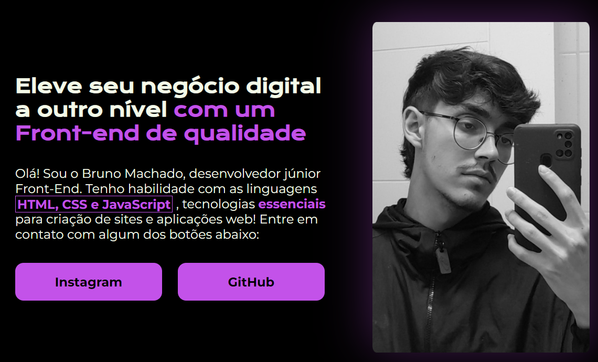

Currículo
Projetos
-
Dashboard de eventos
Projeto realizado durante uma semana de evento de programação, chamada "NLW-Unite", onde criamos este protótipo de dashboard, o qual tem função de controlar e gerenciar as pessoas que vão participar de um evento fictício.
 -
Site versão antiga
Projeto original do site que você está acessando no momento, o qual serviu como protótipo para a versão atual e mais polida desta aplicação web
 -
Machflix (Recriação da página da Netflix)
Projeto feito para estudo próprio, onde tentei recriar da maneira mais fiel possível a página inicial da Netflix (serviço de streaming online), utilizando um catálogo de filmes e séries da própria empresa
Estudos
Experiência